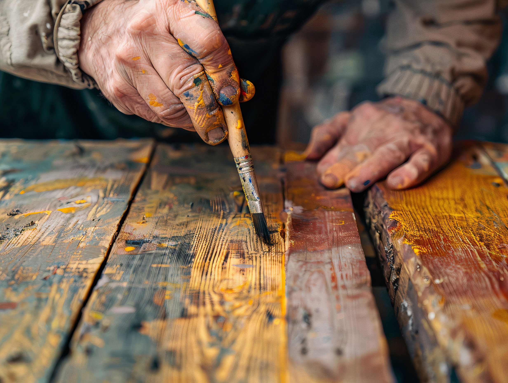

Piccoli restauri
2 ore
I bambini scoprono le tecniche di restauro, attraverso attività pratiche, imparando a riconoscere i materiali e le tecniche utilizzate dagli artisti del passato
Attività incluse
- Osservazione guidata delle opere
- Laboratorio di doratura su legno
- Creazione di un piccolo manufatto